Question 5 is based on a misleading analogy. On the Moon there is essentially no atmosphere, so a leaf blower could not move dust as it does on Earth. A leaf blower works by accelerating the surrounding air, which then transfers momentum to the ground and displaces loose material. The lunar exosphere is so tenuous that it cannot provide the same aerodynamic effect. Although the density of the lunar exosphere is many orders of magnitude lower than Earth's atmosphere, comparing the two by simply scaling air velocity is not physically meaningful. The point is simply that a leaf blower would be ineffective on the Moon because there is virtually no air to accelerate.
One might object that the Lunar Module's descent engine, unlike a leaf blower, generates its own exhaust gas. That is true. However, the exhaust plume expands rapidly into the vacuum of space. As the plume expands, its density and pressure decrease dramatically, reducing its ability to transmit force to the surface over a wide area. While the exhaust remains capable of entraining and transporting fine regolith particles, its effectiveness at excavating large amounts of soil or moving rocks is much more limited.
As an illustration, imagine an expanding cloud of gas. As its radius increases, the gas occupies a much larger volume, so its density—and therefore its pressure—drops rapidly. For example, increasing the radius of an expanding gas cloud by a factor of 100 increases its volume by a factor of 100³ (1,000,000). Although a rocket exhaust plume is not a uniformly expanding sphere, this example illustrates how rapidly gases disperse in a vacuum.
Another important point is that none of the six Lunar Modules landed with the engine perfectly vertical throughout the final descent.
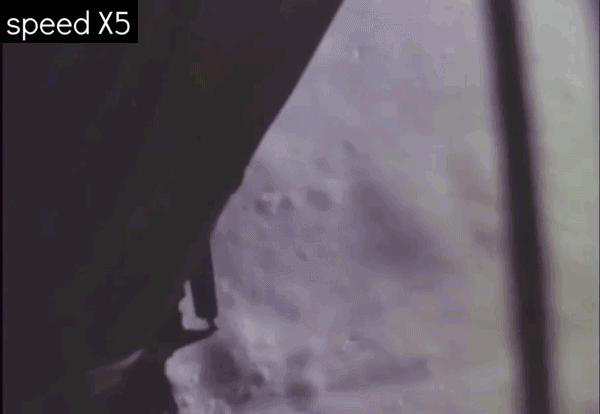
so the engine's exhaust never focused on a single spot long enough on the lunar soil, and not only ...
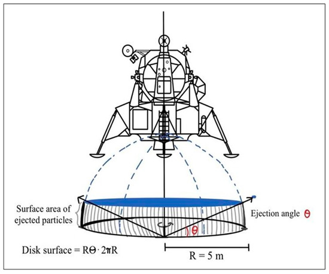
The rocket engine's jet in a vacuum does not remain coherent, it is distributed equally on a hemisphere under the engine, visually displacing large quantities of fine dust, but it is dust distributed in a wide radius so as not to allow a visible and concentrated hole to form in the regolith, as would happen on the contrary in the atmosphere. In other words, if on Earth an engine would form a hole in the sand, on the Moon it would only form a large depression that is more difficult to grasp visually because it is wide and shallow.
Here is conclusive demonstration of how the plume of an engine widens in the absence of atmospheric pressure.

However, as further confirmation we show that the hole in the regolith is not present even under the Chinese probes as we see in the two photos below,
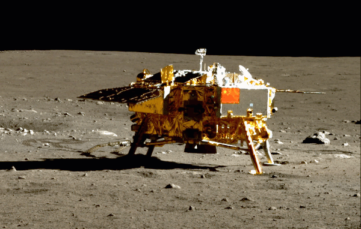
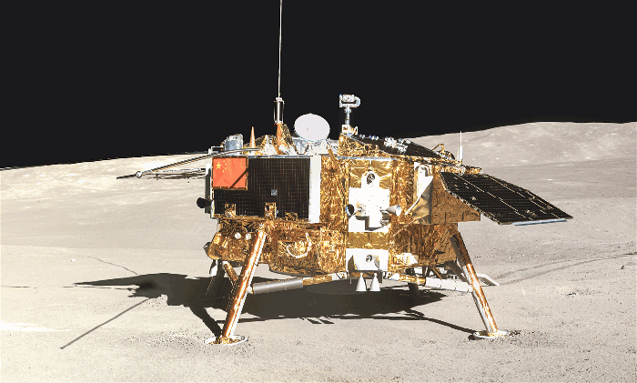
and please do not accept the objection that the Chinese probes don't count, because it would first have to be demonstrated that they are real missions.Absolutely not! Being missions with automatic probes, questioning them today would mean questioning the rovers on Mars and especially the previous Soviet automatic missions, those of 55 years ago, which collected the regolith and brought it back to Earth (Luna 16, 20 24), but not only that... it would mean openly disavowing Fracassi's latest book, A Moon Odyssey to which the author of American Moon wrote the preface, in which the outcome of a Chinese mission is cited as supposed evidence of the Moonhoax.
Question no. 6 can be explained in this way: gases are regulated by a law which is this: PV = nRT, isolating P (which indicates the pressure) the formula becomes: P = nRT/V. Now since V (i.e. the volume) tends to infinity (i.e. the volume of the space above the lunar surface) the pressure will tend to zero with the cube of the distance until it equalizes that of the surrounding exosphere. Not only that, but the jet of gas widens instantly, as can also be seen from this gif of a SpaceX rocket that rises beyond the atmosphere and enlarges its plume until it disappears.
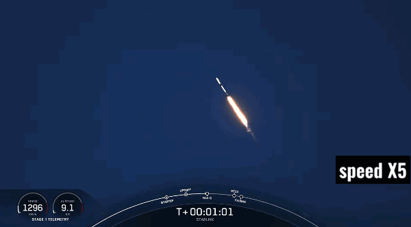
The gas that comes out of the engine is immediately distributed all around the nozzle, and for this reason its pressure collapses and it is not able to transmit sufficient momentum to make concentrated holes, but at most it will make depressions of a few centimeters over a very large area, so it is not visually perceptible. The momentum transferred to the ground is that of the individual gas molecules, moved away from each other and now freed from the Brownian motions that determine temperature and pressure in a gas. Therefore, it is very correct to observe that only the smallest grains of regolith are transported, the only ones that can be sensitive to the minimum momentum that can be transferred to them by molecules that act "individually", while pebbles, which unlike very small grains of regolith, have a greater mass in relation to their surface, intercepting relatively few gas molecules, they are not dragged away. They are moved, but not wiped out, as we also see here in the landing of the Chinese Chang'è 4 probe
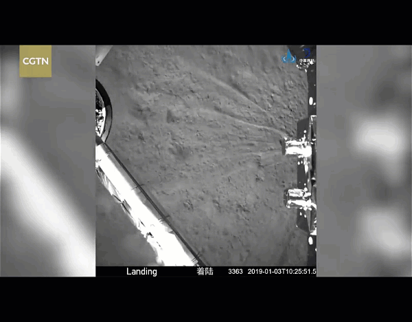
...where only infinitely fine dust is moved and no concentrated holes from landing are noticeable.
However, even supposing that the 6 Apollo missions plus the two Chang'e missions were really fakes, to think that in all eight missions the director constantly forgot to make the holes under the engine, well, this would be a supposition of undoubted psychiatric interest.
The behavior of gases in a vacuum also explains the undulation of lunar flags, which have a much more favorable ratio between surface area and mass. In the case of rapidly expanding gases, the fabric of the flag can intercept much more molecules of that gas than a pebble and by adding the momentum of the molecules that intercepts the large surface of the fabric, they can show a displacement of the free lower angle of the flag that is not restrained by the atmosphere in its undulation. A phenomenon that we also notice on Earth, where a slight breath of wind can move a weathervane and leave sand and pebbles motionless.
But we will explore this phenomenon related to flag movements in another answer.
Question no. 7 reports a conceptual error: the regolith is not sand and is by no means 15 cm deep, but on average several meters in mare regions and more in highland areas.
It could seem softer on the surface only because it is less compressed, but even if you dig a few meters into the lunar soil, you would always find only regolith, so you would not see a difference in composition in the soil as you could notice if there were rock under the regolith.
Here we see an Apollo 16 astronaut digging the regolith from a hole much deeper than 15 cm and it should be noted the unusual behavior of the grains of dust it raises, in fact they all have the same parabolic arc, from the smallest to the largest and fall together without forming the slightest swirl of dust.

The fact that the gases escaping from the LEM engine did not transfer enough momentum to the ground to create concentrated holes, we explained in the previous answer and this is independent of the softness or otherwise of the regolith. If anything, the softness of the regolith guarantees that there was a sufficient amount of microscopic grains that could be captured by the gases, as seen in the images and videos. But it is also clear that if you do not lift the regolith of all dimensions a concentrated hole will not be visible, just as a hole does not appear if you sweep the dust from a carpet with a jet of air.
However, let's repeat the concept already expressed: it is not true that the engine has left the regolith intact, there has been a change. The gas did not come out vertically as on Earth, but distributed in a hemisphere around the nozzle, dug the regolith for a few centimeters on a large surface of several meters in diameter, so it is difficult to perceive to the eye as a concentrated hole and viewable from above as a more reflective area due to the sweeping of gases. To confirm this, I put this comparison between a photo taken before the Apollo 15 moon landing and one after the moon landing, where you can see a more reflective area at the landing site due to the sweeping of the engine gases.
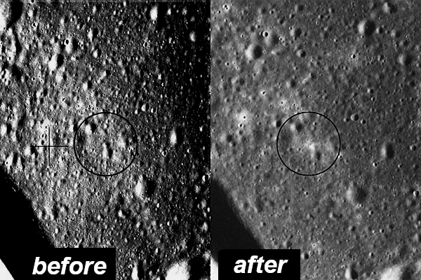
The most reflective area is confirmed by this additional photo taken by the Japanese probe Selene, also relating to the Apollo 15 landing site.
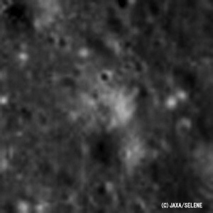
'The "halo" area around Apollo 15 landing site' - SELENE Terrain Camera
Question no. 8 contains yet another conceptual error, speaking of "dust raised", which is not correct if it refers to the movement of the regolith in a vacuum, which unlike on Earth is not "raised", but moved.
Here we show a gif that illustrates the difference between the movement of dust on the Moon and the uplift of dust generated on Earth during the landing of Starship.
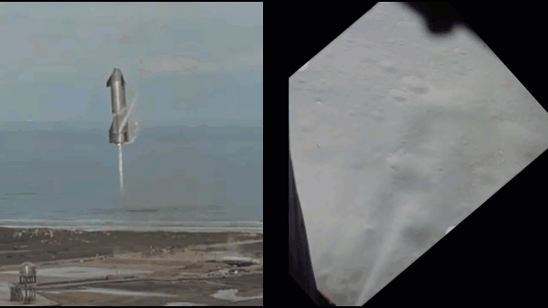
The difference, as you can see, is abysmal. The terrestrial dust rises in a chaotic and disorderly way, forming clouds that cover the rocket itself up to the top before the end of the landing, while the lunar regolith moves in a parabolic arc, encountering no resistance, dragged by the gas molecules that escape from each other, without other atmospheric gas molecules being able to stop them.
Here we show a gif that shows the behavior of dust during moon landings.
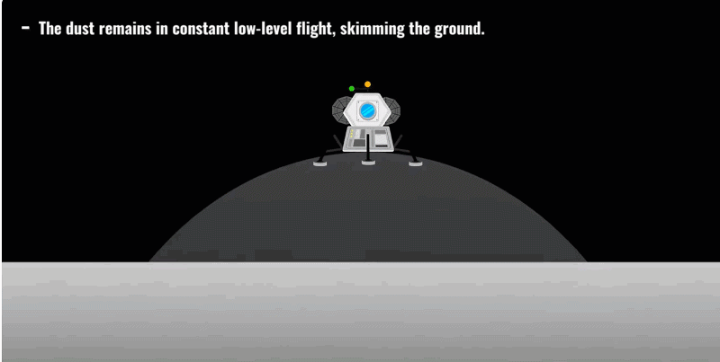
Now we can explain the dynamics: the absence of abundant dust inside the LEM plates has two reasons: the first is that this did not rise, but moved from the ground, rising in the distance and not close to the LEM and even less above the LEM as it would do on Earth. The dust starting from the ground traveled parabolic trajectories away, and in doing so it was able to meet the LEM plates only shortly before contact with the ground, where, however, the engine is usually shut down.
The second reason is that it is impossible for the gas molecules that have captured the regolith to stop so close to the engine and deposit the dust in the dishes. The regolith collected by the gases leaving the nozzle is deposited much further away. NASA noticed the Apollo 12 mission, which landed 200 meters from Surveyor 3, when, bringing back to Earth several parts of the probe (including the camera), it saw that these parts had been hit by the regolith raised by Apollo 12 on the moon landing and 200 meters away.
That little regolith that may have ended up on the footpads of the LEM is visible in this image:
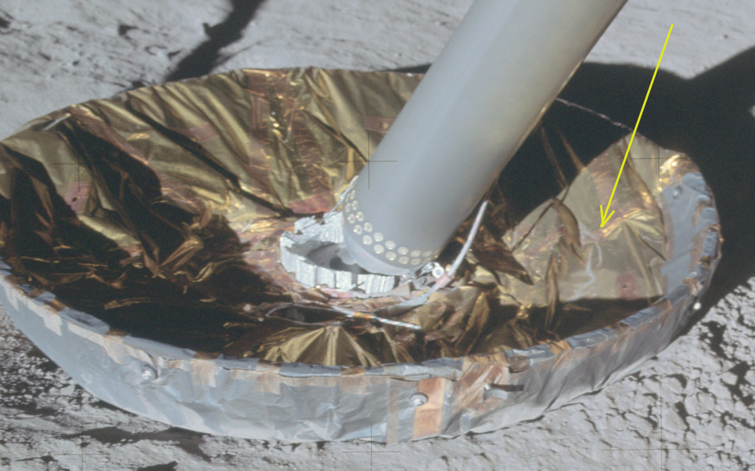
It got there because the moment the footpads met the ground, the dust impacted against the legs of the LEM and something bounced off ending up in the footpads, (in fact, to confirm this, the regolith is located right between the leg of the LEM and the engine, while in other positions in the plate there is no presence of dust). Obviously, however, we are talking about minimal quantities and dependent on the seconds in which the engine remained in operation after the moon landing, so it is justified that in other moon landings with early shutdown of the engine, no dust is visible in the dishes.
However, we also put the images of the Chinese probes that have the footpads very similar to those of the lem, and as we see there is no dust in their plates, confirming our explanation.
Chang'e 5
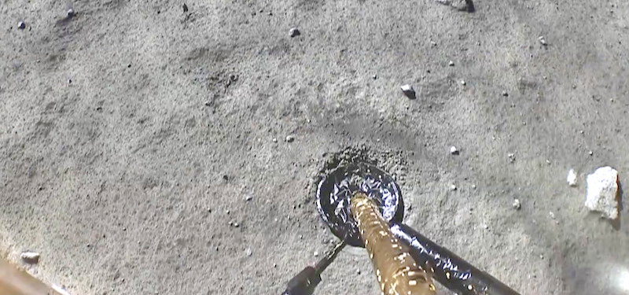
Chang'e 6
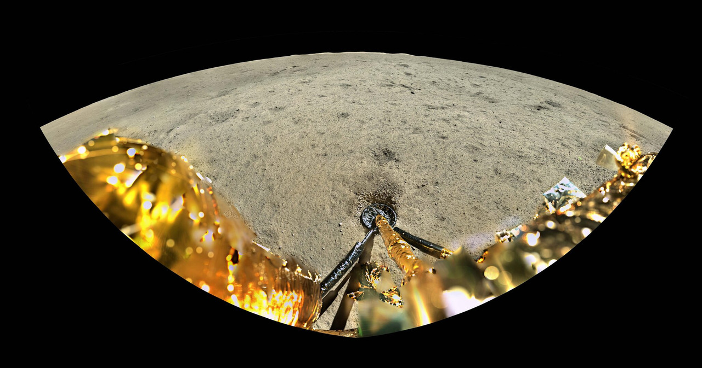
Of course, I repeat the exhortation: denying the veracity of the Chinese missions is a shortcut that leads straight to flat-earthism, because only flat-earthers deny them, no nation, no scientist or expert in the field questions them, starting with the author's friend, Franco Fracassi who (recklessly) brought a Chinese lunar mission to try to prove his conspiracy theories.
Question 9 states something completely invented, namely that the gases from the engine swept the footpads of the LEM. This was a hypothesis that the debunker Paolo Attivissimo had made, but we have seen that it is groundless, because no dust could fall into the footpads of the LEM, as this, unlike in the atmosphere, did not swirl into clouds with chaotic and disorderly movement, clouds that would have filled the space near the engine and then fell back in the vicinity, so even in the dishes, but the powder was thrown parallel to the ground in parabolic arcs that rose away at very high speed.
It's as if I put a plate just a meter from me and then, in that direction, I forcefully threw a handful of stones. Could I be surprised that no stone fell into the plate? Absolutely not. This explains the phenomenon: the lack of atmosphere makes infinitesimal grains of regolith like stones on earth, in fact, as Galileo explained to us, in the absence of air a hammer and a feather (but also a grain of regolith) travel in the same way and falling at the same time, they arrive together on the ground.
As proof of what has been said, we add the link to this document [Cratering and Blowing Soil by Rocket Engines During Lunar Landings], where the analysis of the characteristics of the craters produced by the moon landings and the type of dust displaced is deepened. As can be seen from the graph, taken from the document linked above,
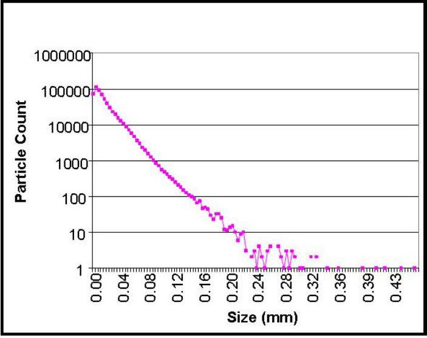
the size of the grains displaced by the engine gases is maximum for infinitesimal dimensions, while it is almost zero for dimensions greater than a third of a millimeter.
It is clear that during the moon landings, only the finest dust was raised, while all the other components of the regolith were not moved. For this reason, the landing craters had a depth of a few centimeters and a circular width of several meters in radius. To further confirm and to close the argument definitively we add the observation that this particular characteristic of gases in the vacuum surprised the astronauts themselves, in fact we report Armstrong's description when he looked under the LEM and commented:
109:26:16 "Okay. The descent engine did not leave a crater of any size. It has about one foot clearance on the ground. We're essentially on a very level place here. I can see some evidence of rays emanating from the descent engine, but a very insignificant amount".
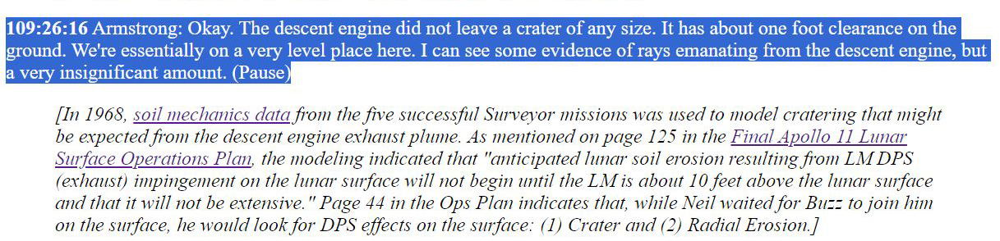
Now please let's try to reason: if the lack of holes had been an oversight of the director, this would have done the shot again with the hole below, and especially for the other 5 moon landings it would not have made the same mistake again.
Armstrong's words, on the other hand, put a tombstone on this whole discussion of the holes under the engine: it was absolutely not an oversight of the director as the conspiracy theory supposes, but that's just how nature works.
Chapters: